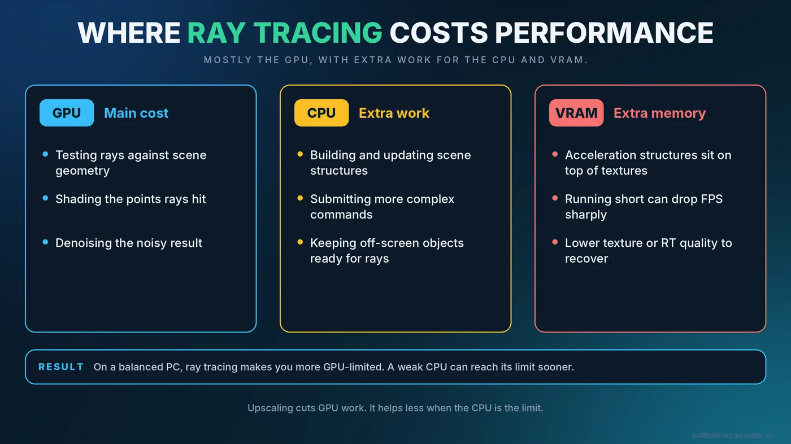
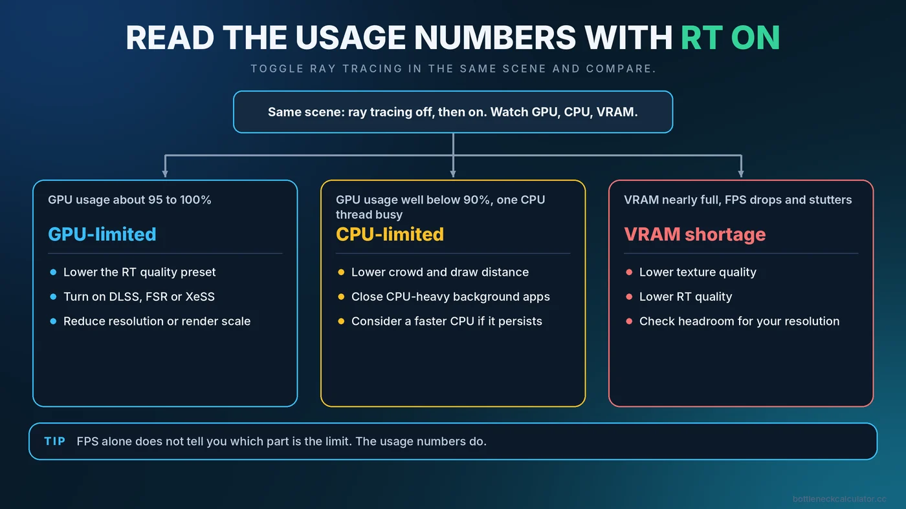

Does Ray Tracing Cause a CPU Bottleneck? Where the Performance Cost Really Lands
Switch on ray tracing and your frame rate falls, sometimes dramatically. Most people blame the graphics card, and often that is right. But ray tracing also adds work for the processor, and a weak CPU can make the drop even bigger. This guide helps you work out which part is paying the price on your system.

Short Answer: Mostly the GPU, With Extra Work for the CPU
Ray tracing is primarily a graphics card workload. Following the path of light through a scene means a huge number of calculations, and modern cards include dedicated hardware to speed it up. But the game also has to prepare and update the data structures the graphics card uses to trace rays, and much of that preparation happens on the CPU. In many games, turning on ray tracing raises CPU load as well as GPU load.
The practical result: on a balanced system, ray tracing makes you more GPU-limited. On a system with a weak CPU, it can make you CPU-limited sooner than you expected.
What Ray Tracing Adds to the Frame
Work on the graphics card
- Testing rays against the geometry in the scene
- Shading the points those rays hit
- Cleaning up noisy results with denoising, which uses extra GPU time
Work on the CPU
- Building and updating acceleration structures that describe the scene to the GPU
- Submitting more complex rendering commands
- Handling more objects that must be kept visible to rays, even those outside the camera view
Work on video memory
Ray tracing also tends to need more VRAM, because the acceleration structures take up space on top of textures. If you run short, performance can fall sharply. Our guide on how much VRAM you need helps you judge your headroom.
How to Tell Whether Ray Tracing Is Hitting Your CPU or GPU
You do not need special tools. A simple test using a monitoring overlay is enough.
- Pick a fixed scene. Use a built-in benchmark or stand in the same place in the game each time.
- Record with ray tracing off. Note FPS, GPU usage and the busiest CPU core.
- Turn ray tracing on and repeat. Do not change anything else.
- Compare the usage numbers, not only FPS.
| What you see with ray tracing on | Likely meaning |
|---|---|
| FPS drops, GPU usage rises to about 95-100% | GPU-limited. The graphics card is the ceiling. |
| FPS drops, GPU usage stays well below 90%, one CPU thread is very busy | CPU-limited. The processor cannot feed the GPU fast enough. |
| FPS drops sharply and stutters, VRAM is nearly full | VRAM shortage. Lower textures or ray tracing quality. |
| FPS drops only in some areas | Scene-dependent. Crowded or reflective areas cost more. |
If you are unsure how to read these readings, our guide on how to check a PC bottleneck goes through them with examples.

Why a Weaker CPU Can Make Ray Tracing Feel Worse
A modest processor may keep up with a game in standard rendering, but ray tracing adds more preparation per frame. If the CPU was already close to its limit, the extra work pushes it over. You then see lower frame rates and, often, uneven frame times. If you see this, read about CPU vs GPU bottlenecks and our advice on fixing high CPU usage.
Which Ray Tracing Settings to Change First
Games rarely offer a single on or off switch. Each effect has its own cost, and the cheaper ones can give you much of the visual benefit.
- Lower the ray tracing quality preset. A step down from the highest setting often saves a lot while changing the image only slightly.
- Enable only the effects that matter to you. Reflections and global illumination often change the picture the most, while others cost a lot for subtle gains. The relative cost varies by game.
- Use upscaling. DLSS, FSR and XeSS render at a lower internal resolution, which reduces GPU work. They help less if the CPU is the limit. See how upscaling and frame generation affect your bottleneck.
- Lower the resolution or render scale. Fewer pixels means fewer rays to shade.
- Reduce crowd, draw distance or object detail. These ease the CPU work that grows with ray tracing.
- Check textures against your VRAM. A lower texture setting can prevent memory-related drops.
Path Tracing Is a Step Further
Some recent games use path tracing, a more complete form of ray tracing that simulates light more fully. It is the most demanding option and is aimed at high-end graphics cards, usually together with upscaling and frame generation. If you try it on a mid-range card, expect to lower other settings and rely on upscaling.
Is Ray Tracing Worth It on Your PC?
That depends on the game, your card and your priorities. Some games show a striking difference, while in others the improvement is subtle and the performance cost is high. A reasonable approach is to compare screenshots with ray tracing on and off at a frame rate you are happy with. If you would need to sacrifice smoothness for a small visual gain, leaving it off is a perfectly sensible choice. If you play competitive games, higher and steadier FPS usually matters more.
Common Misconceptions
- "Ray tracing is purely a GPU feature." The GPU does most of it, but the CPU still has extra work to do.
- "A faster CPU will fix ray tracing performance." Only if the CPU is actually the limiter. Check usage first.
- "Upscaling always fixes it." It reduces GPU load, so it helps most when the GPU is the limit.
- "More VRAM is not needed." Ray tracing raises memory use, so an 8GB card can run out sooner.
Conclusion
Ray tracing mainly pressures the graphics card, but it can expose a weak processor and a short supply of video memory too. Test with and without it, read the usage numbers, and adjust the settings that fit your bottleneck. For a quick estimate of whether your CPU and GPU are well matched to begin with, use the free PC Bottleneck Calculator, then verify with real monitoring.
Frequently Asked Questions
Does ray tracing use the CPU?
Yes, to some extent. The CPU helps prepare and update the data the GPU uses to trace rays, so many games show higher CPU load with ray tracing on. The graphics card still does most of the work.
Why does my FPS drop so much with ray tracing?
Ray tracing adds a large amount of GPU work, and sometimes extra CPU and VRAM demand. Check usage with and without it to see which part is the limit.
Can a CPU bottleneck a ray tracing GPU?
Yes. If the CPU cannot prepare frames quickly enough, GPU usage stays low and FPS stops rising, even on a powerful card.
Does DLSS or FSR help with ray tracing performance?
Yes, mainly by lowering the GPU's workload through a smaller internal resolution. It helps less when the CPU is what is holding you back.
Is ray tracing worth turning on?
It depends on the game and your hardware. Compare the image quality against the frame rate you give up, and keep it on only if you are happy with the result.